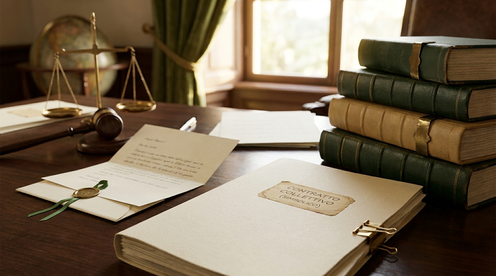

Licenziamento per giusta causa: quanto pesa il contratto collettivo?
La Corte di Cassazione torna sul rapporto tra giusta causa di licenziamento e contratto collettivo. Il giudice può ritenere giustificato un licenziamento anche se il CCNL non lo prevede, purché la condotta sia gravissima. Ma quando il contratto associa una sanzione più lieve a un comportamento, quel limite vincola la decisione. Una distinzione che incide direttamente sulla legittimità del recesso.

Il principio affermato dalla Cassazione
La Sezione Lavoro della Corte di Cassazione affronta una questione ricorrente nel contenzioso sui licenziamenti: il giudice è vincolato a quanto stabilisce il contratto collettivo quando valuta la giusta causa di recesso?
La risposta è articolata e merita attenzione, perché distingue due situazioni opposte che producono effetti pratici molto diversi.
Da un lato, il giudice può ritenere sussistente la giusta causa anche se la condotta non è espressamente elencata nel CCNL tra le ipotesi che giustificano il licenziamento. Dall'altro, se il contratto collettivo associa a un determinato comportamento una sanzione conservativa - cioè più lieve del licenziamento - quel limite vincola il giudice, che non può sostituire la sanzione prevista con l'espulsione del lavoratore.
Inquadramento normativo
Il riferimento è l'art. 2119 del codice civile, che consente a ciascuna parte di recedere dal contratto di lavoro prima della scadenza, o senza preavviso nel rapporto a tempo indeterminato, quando si verifica «una causa che non consenta la prosecuzione, anche provvisoria, del rapporto».
La giusta causa è quindi una nozione di legge, non una creazione del contratto collettivo. Le previsioni del CCNL hanno valore esemplificativo: indicano comportamenti che le parti sociali considerano gravi, ma non esauriscono le ipotesi rilevanti.
Qui sta il punto. Le clausole del contratto collettivo operano in due direzioni diverse:
- quando elencano condotte sanzionabili con il licenziamento, hanno funzione esemplificativa e non impediscono al giudice di valutare come gravissimi altri comportamenti non tipizzati;
- quando associano a una condotta una sanzione conservativa (richiamo, multa, sospensione), pongono un limite che il datore di lavoro e il giudice devono rispettare.
La ragione è coerente: se le parti sociali hanno già qualificato un comportamento come meritevole di sanzione lieve, ammettere il licenziamento per lo stesso fatto significherebbe svuotare la previsione contrattuale e introdurre una discrezionalità incompatibile con la certezza del rapporto.
Cosa cambia per datore di lavoro e lavoratore
Per il datore di lavoro, la lezione è chiara: prima di intimare un licenziamento per giusta causa occorre verificare che la condotta non rientri tra quelle per cui il CCNL prevede una sanzione conservativa. In quel caso il licenziamento è esposto a un elevato rischio di annullamento, con le conseguenze reintegratorie o indennitarie previste dalla disciplina applicabile.
Per il lavoratore, la pronuncia conferma uno strumento difensivo concreto. Se il contratto collettivo qualifica il proprio comportamento come passibile di sanzione minore, può contestare la proporzionalità del licenziamento richiamando direttamente la clausola contrattuale.
Resta ferma, in ogni caso, la valutazione di gravità della condotta. La giusta causa richiede un fatto idoneo a ledere in modo irreparabile il vincolo fiduciario tra le parti. Non basta un inadempimento qualsiasi: serve un comportamento di intensità tale da rendere intollerabile la prosecuzione, anche temporanea, del rapporto.
Cosa fare in concreto
- Verificate il CCNL applicabile prima di qualsiasi provvedimento disciplinare: individuate se la condotta è tipizzata e quale sanzione vi è associata.
- Valutate la proporzionalità tra fatto contestato e sanzione, distinguendo le clausole esemplificative da quelle che impongono sanzioni conservative.
- Documentate la gravità della condotta, soprattutto quando il comportamento non è espressamente previsto dal contratto: la motivazione del recesso deve reggere al vaglio giudiziale.
- Rispettate il procedimento disciplinare dell'art. 7 dello Statuto dei lavoratori: contestazione tempestiva, specifica e diritto di difesa.
- Conservate ogni elemento probatorio utile a dimostrare l'effettiva incidenza del fatto sul rapporto fiduciario.
La distinzione tra clausole esemplificative e limiti vincolanti è spesso decisiva nell'esito del giudizio. Una valutazione errata in fase di recesso può tradursi nell'illegittimità del licenziamento, con conseguenze economiche significative.
---
*Contributo informativo a cura di Tamburro & Partners - Avv. Giuseppe Tamburro. Non costituisce parere legale.*
Ogni storia di lavoro ha i suoi tempi.
Se gestisci HR e vuoi un confronto su contenzioso, ispezioni o licenziamenti, scrivi allo studio. Ti rispondiamo entro un giorno lavorativo.